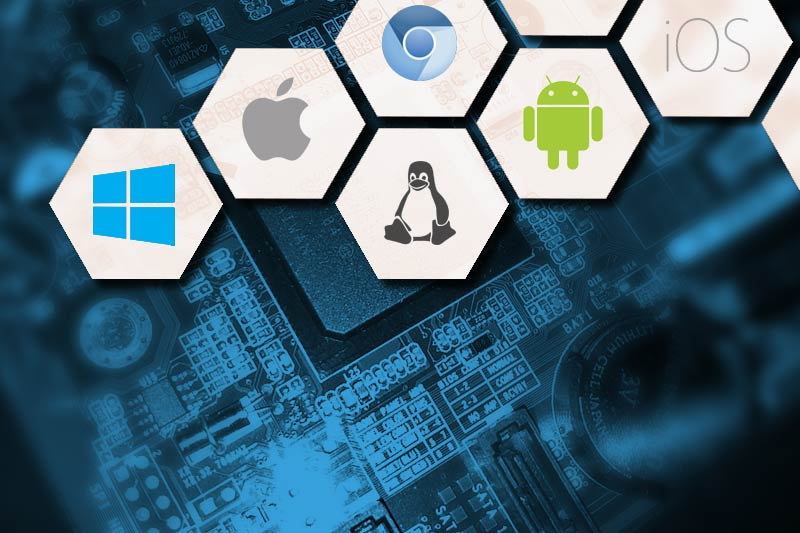

História dos Computadores
As primeiras máquinas de computar
A primeira máquina computadora de verdade foi construída por Wilhelm Schickard sendo capaz de somar, subtrair, multiplicar e dividir. Essa máquina foi perdida durante a guerra dos trinta anos, sendo que recentemente foi encontrada alguma documentação sobre ela. Durante muitos anos nada se soube sobre essa máquina, por isso, atribuía-se a Blaise Pascal (1623-1662) a construção da primeira máquina calculadora, que fazia apenas somas e subtrações.
A máquina Pascal foi criada com objetivo de ajudar seu pai a computar os impostos em Rouen, França. O projeto de Pascal foi bastante aprimorado pelo matemático alemão Gottfried Wilhelm Leibniz (1646-1726), que também inventou o cálculo, o qual sonhou que, um dia no futuro, todo o raciocínio pudesse ser substituído pelo girar de uma simples alavanca.
Todas essas máquinas, porém, estavam longe de ser um computador de uso geral, pois não eram programáveis. Isto quer dizer que a entrada era feita apenas de números, mas não de instruções a respeito do que fazer com os números.
Os primeiros computadores de uso geral
O primeiro computador eletromecânico foi construído por Konrad Zuse (1910–1995). Em 1936, esse engenheiro alemão construiu, a partir de relês que executavam os cálculos e dados lidos em fitas perfuradas, o Z1. Zuse tentou vender o computador ao governo alemão, que desprezou a oferta, já que não poderia auxiliar no esforço de guerra. Os projetos de Zuse ficariam parados durante a guerra, dando a chance aos americanos de desenvolver seus computadores.
Foi na Segunda Guerra Mundial que realmente nasceram os computadores atuais. A Marinha dos Estados Unidos, em conjunto com a Universidade de Harvard, desenvolveu o computador Harvard Mark I, projetado pelo professor Howard Aiken, com base no calculador analítico de Babbage. O Mark I ocupava 120 m³ aproximadamente, conseguindo multiplicar dois números de dez dígitos em três segundos.
Arquitetura de hardware
Mesmo que a tecnologia utilizada nos computadores digitais tenha mudado dramaticamente desde os primeiros computadores da década de 1940 (veja história do hardware), quase todos os computadores atuais ainda utilizam a arquitetura de von Neumann proposta por John von Neumann.
Seguindo a arquitetura, os computadores possuem quatro sessões principais, a unidade lógica e aritmética, a unidade de controle, a memória e os dispositivos de entrada e saída. Essas partes são interconectadas por barramentos. A unidade lógica e aritmética, a unidade de controle, os registradores e a parte básica de entrada e saída são conhecidos como a CPU.
Processamento
O processador (ou CPU) é uma das partes principais do hardware do computador e é responsável pelos cálculos, execução de tarefas e processamento de dados. A velocidade com que o computador executa as tarefas ou processa dados está diretamente ligada à velocidade do processador. As primeiras CPUs eram constituídas de vários componentes separados, mas desde meados da década de 1970 as CPUs vêm sendo manufaturadas em um único circuito integrado, sendo então chamadas microprocessadores.
A unidade lógica e aritmética (ULA) é a unidade central do processador, que realmente executa as operações aritméticas e lógicas entre dois números. Seus parâmetros incluem, além dos números operandos, um resultado, um comando da unidade de controle, e o estado do comando após a operação. O conjunto de operações aritméticas de uma ULA pode ser limitado a adição e subtração, mas também pode incluir multiplicação, divisão, funções trigonométricas e raízes quadradas. Algumas podem operar somente com números inteiros, enquanto outras suportam o uso de ponto flutuante para representar números reais (apesar de possuírem precisão limitada).
A unidade de controle é a unidade do processador que armazena a posição de memória que contém a instrução corrente que o computador está executando, informando à ULA qual operação a executar, buscando a informação (da memória) que a ULA precisa para executá-la e transferindo o resultado de volta para o local apropriado da memória. Feito isto, a unidade de controle vai para a próxima instrução (tipicamente localizada na próxima posição da memória), a menos que a instrução seja uma instrução de desvio informando que a próxima instrução está em outra posição.
A CPU também contém um conjunto restrito de células de memória chamadas registradores, que podem ser lidas e escritas muito mais rapidamente que em outros dispositivos de memória. São usadas frequentemente para evitar o acesso contínuo à memória principal cada vez que um dado é requisitado.

Memória
A memória é um dispositivo que permite ao computador armazenar dados por certo tempo. Atualmente o termo é geralmente usado para definir as memórias voláteis, como a RAM, mas seu conceito primordial também aborda memórias não voláteis, como o disco rígido. Parte da memória do computador é feita no próprio processador; o resto é diluído em componentes como a memória RAM, memória cache, disco rígido e leitores de mídias removíveis, como disquete, CD e DVD.
Nos computadores modernos, cada posição da memória é configurado para armazenar grupos de oito bits (chamado de um byte). Cada byte consegue representar 256 números diferentes; de 0 a 255 ou de -128 a +127. Para armazenar números maiores pode-se usar diversos bytes consecutivos (geralmente dois, quatro ou oito). Quando números negativos são armazenados, é utilizada a notação de complemento para dois.
Sistema Operacional (SO)
Um computador sempre precisa de no mínimo um programa em execução por todo o tempo para operar. Tipicamente este programa é o sistema operacional (ou sistema operativo), que determina quais programas vão executar, quando, e que recursos (como memória e E / S) ele poderá utilizar. O sistema operacional também fornece uma camada de abstração sobre o hardware, e dá acesso aos outros programas fornecendo serviços, como programas gerenciadores de dispositivos ("drivers") que permitem aos programadores escreverem programas para diferentes máquinas sem a necessidade de conhecer especificidades de todos os dispositivos eletrônicos de cada uma delas.
